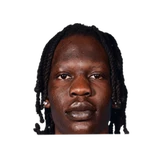

Ryan Ward:Frank Vogel on Trevor Ariza:
“We're hoping to have him potentially practice with the G League next week.... If that's necessary to get more live work. ... No update on the exact timeline.”

Every quote from Frank Vogel about Trevor Ariza in the archive, newest first. Each one links to its original source.
Ryan Ward:Frank Vogel on Trevor Ariza:
“We're hoping to have him potentially practice with the G League next week.... If that's necessary to get more live work. ... No update on the exact timeline.”
Mike Trudell:Vogel on Trevor Ariza:
“Right now he’s still out with the sore ankle. We’re in the process of evaluating that day-to-day.”

Frank Vogel on Bol Bol3 quotes